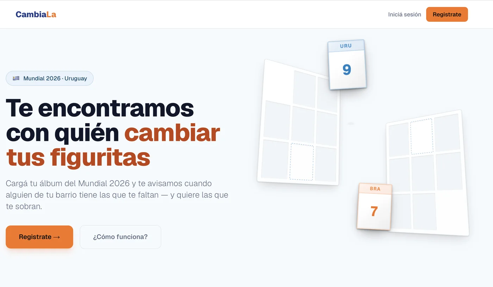

CambiaLa
cambiala.uy- Problema
- Cuando ya cambiaste figuritas con todos tus conocidos, solo queda comprar más paquetes. Ninguna app te conectaba con coleccionistas cerca tuyo.
- Decisiones
- MVP estricto (qué dejar afuera), modelo de datos primero, matching por cercanía, chat y reputación por reseñas.
- Stack
- Next.js · TypeScript · Supabase · Prisma · Vercel · Inngest
- Resultado
- En producción con dominio propio y SEO desde el día uno. Producto end-to-end: de la idea al deploy.